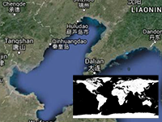

Detection of water by texture

Detect the location on the water or on the land by additional texture.
Usage instructions:
Link to additional Texture
Add this script to map GameObject, select additional texture and start the scene.
Important: Make sure «Read / Write Enabled - ON» in Texture Importer.
Move your mouse over the map and click "P" to check whether there is water at the point under the cursor.
The result will be shown in the console.
Link to additional Texture
{kind=link}
Add this script to map GameObject, select additional texture and start the scene.
Important: Make sure «Read / Write Enabled - ON» in Texture Importer.
Move your mouse over the map and click "P" to check whether there is water at the point under the cursor.
The result will be shown in the console.
DetectWaterByTextureExample.cs
/* INFINITY CODE 2013-2019 */
/* http://www.infinity-code.com */
using UnityEngine;
namespace InfinityCode.OnlineMapsExamples
{
/// <summary>
/// Example of detection of water by texture.
/// This example requires a texture:
/// http://infinity-code.com/atlas/online-maps/images/mapForDetectWaterBW4.jpg
/// </summary>
[AddComponentMenu("Infinity Code/Online Maps/Examples (API Usage)/DetectWaterByTextureExample")]
public class DetectWaterByTextureExample : MonoBehaviour
{
private static Color32 waterColor = Color.black;
// Set map 2048x2048, with Read / Write Enabled
public Texture2D mapForDetectWater;
private void Update()
{
if (Input.GetKeyUp(KeyCode.P))
{
Vector2 mouseCoords = OnlineMapsControlBase.instance.GetCoords();
bool hasWater = HasWater(mouseCoords.x, mouseCoords.y);
Debug.Log(hasWater ? "Has Water" : "No Water");
}
}
private bool HasWater(float lng, float lat)
{
// Convert geo coordinates to tile coordinates
double tx, ty;
OnlineMaps.instance.projection.CoordinatesToTile(lng, lat, 3, out tx, out ty);
const int countTileRowCol = 8;
// Convert tile coordinates to texture coordinates (UV)
tx /= countTileRowCol;
ty /= countTileRowCol;
// Check pixel color
Color color = mapForDetectWater.GetPixelBilinear((float)tx, (float)(1 - ty));
Debug.Log(tx + " " + ty);
return color == waterColor;
}
}
}